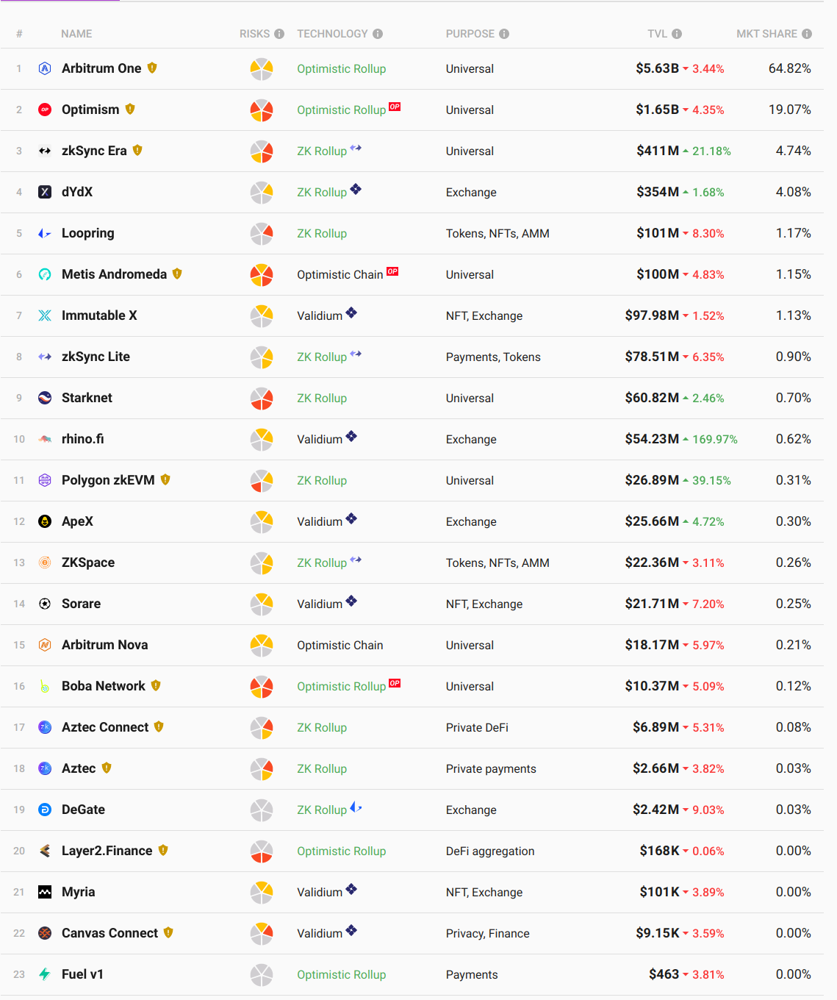
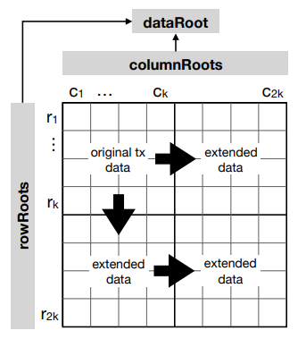
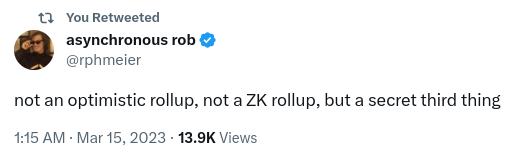

<!DOCTYPE html>
<html lang="en">

<head>
  <meta charset="utf-8" />
  <meta name="viewport" content="width=device-width, initial-scale=1.0, maximum-scale=1.0, user-scalable=no" />

  <title>Blockchains Scaling 2: Modular and Heterogeneous</title>
  <link rel="shortcut icon" href="./../../../assets/favicon.ico" />
  <link rel="stylesheet" href="./../../../dist/reset.css" />
  <link rel="stylesheet" href="./../../../dist/reveal.css" />
  <link rel="stylesheet" href="./../../../assets/styles/PBA-theme.css" id="theme" />
  <link rel="stylesheet" href="./../../../css/highlight/shades-of-purple.css" />

  <link rel="stylesheet" href="./../../.././assets/styles/custom-classes.css" />

</head>

<body class="site">
  <header class="site-header">
    <!-- This logo is a link only on the watching server, not the production build -->
    <a href="">
      
    </a>
  </header>
  <main class="reveal">
    <article class="slides">
      <section  data-markdown><script type="text/template">

# Blockchain Scaling

## Modular and Heterogeneous
</script></section><section  data-markdown><script type="text/template">
## Modularity: decoupling roles of an L1

- Sequencing: ordering operations as input to STF
  - Necessary, but always off-chain
- Ordering state transitions
  - Definition of a blockchain
  - In the case of L2s: commitments to state transitions (usually state roots) of other chains stored on L1 chain
- Executing state transitions
  - By definition L2s move execution off-chain
- Data Availability
  - Decoupling DA from ordering is often referred to as "modular blockchains" (Celestia)
</script></section><section  data-markdown><script type="text/template">
## Taxonomy of L2s



<aside class="notes"><ul>
<li><a href="https://l2beat.com/scaling/summary">https://l2beat.com/scaling/summary</a></li>
</ul>
</aside></script></section><section  data-markdown><script type="text/template">
## Taxonomy of L2s

- Sidechains
  - Inherit ordering from L1
  - Honest majority bridge (e.g. 5-of-8 multisig)
</script></section><section  data-markdown><script type="text/template">
## Taxonomy of L2s

- Smart Contract Rollups
  - Inherit ordering and availability from L1
  - "Trust-minimized" bridge:
    - STF correctness with validity or fraud proofs
    - Inbox: option for transactions proposed through base layer to avoid sequencer/proposer censorship
</script></section><section  data-markdown><script type="text/template">
## Taxonomy of L2s

- Validiums
  - Inherit ordering from L1
  - Trust-minimized bridge
  - Off-chain DA

<aside class="notes"><p><a href="https://www.starknet.io/en/posts/developers/rollup-validium-volition-where-is-your-data-stored">https://www.starknet.io/en/posts/developers/rollup-validium-volition-where-is-your-data-stored</a></p>
</aside></script></section><section  data-markdown><script type="text/template">
## Taxonomy of L2s

- Sovereign Rollups
  - Inherit ordering and availability from L1 (even Bitcoin lol)
  - No trust-minimized bridge: correctness and censorship-resistance entirely off-chain

<aside class="notes"><ul>
<li><a href="https://celestia.org/learn/sovereign-rollups/an-introduction/">https://celestia.org/learn/sovereign-rollups/an-introduction/</a> <!-- markdown-link-check-disable-line --></li>
<li><a href="https://rollkit.dev/blog/sovereign-rollups-on-bitcoin-with-rollkit">https://rollkit.dev/blog/sovereign-rollups-on-bitcoin-with-rollkit</a></li>
</ul>
</aside></script></section><section  data-markdown><script type="text/template">
## Settlement?

- Many in the Ethereum community define rollups by their bridges
  - Makes sense if the purpose is scaling ETH transactions
- Rollup nodes can fork the rollup and point at different bridge
  - L1 native tokens remain locked
  - L2 native tokens retain value
- Some modular consensus layers don't allow settlement: Polkadot and Celestia

<aside class="notes"><ul>
<li><a href="https://dba.mirror.xyz/LYUb_Y2huJhNUw_z8ltqui2d6KY8Fc3t_cnSE9rDL_o">https://dba.mirror.xyz/LYUb_Y2huJhNUw_z8ltqui2d6KY8Fc3t_cnSE9rDL_o</a></li>
</ul>
</aside></script></section><section  data-markdown><script type="text/template">
## Data Availability
</script></section><section  data-markdown><script type="text/template">
## Data Availability

- _Not_ data storage. Only for a limited time.
- Two purposes:
  - Security: to verify STF correctness in optimistic systems (one week in ORUs, ~30s in Polkadot)
  - Liveness: for sequencers to download in order to build on top of. Must be a bit longer than STF correctness (~1 day in Polkadot, 30 days in danksharding)
- Cannot use fraud proofs (fisherman's dilemma)
- Simplest option is to post on L1 (Ethereum calldata)
</script></section><section  data-markdown><script type="text/template">
## Data Availability Committee (DAC)

- Nodes each redundantly hold data
- Can be off-chain or using committees of L1 validators
- Post threshold signature to L1 attesting to availability
- Coordination can be expensive for rollup users: which shard has my data?
</script></section><section  data-markdown><script type="text/template">
## Data Availability Sampling (DAS)

- Data is erasure encoded
- Light clients can verify availability by randomly sampling nodes
- e.g. Celestia (standalone DA layer), Danksharding (Ethereum roadmap), Polygon Avail (built on Substrate), ZKPorter, Eigenlayer

<aside class="notes"><ul>
<li><a href="https://arxiv.org/abs/1809.09044">https://arxiv.org/abs/1809.09044</a></li>
<li><a href="https://github.com/availproject/data-availability/blob/master/reference%20document/Data%20Availability%20-%20Reference%20Document.pdf">https://github.com/availproject/data-availability/blob/master/reference%20document/Data%20Availability%20-%20Reference%20Document.pdf</a></li>
</ul>
</aside></script></section><section  data-markdown><script type="text/template">
## How to ensure coding was done correctly?

- SNARKs: too expensive
- Fraud proofs: requires 2D encoding to be efficient
- KZG commitments: also allows distributed reconstruction (chunking)
</script></section><section  data-markdown><script type="text/template">
## 2D Reed Solomon

<pba-cols>
<pba-col>



</pba-col>
<pba-col>

- Computes Merkle roots for rows and columns
- Requires storing 2$\sqrt{n}$ state roots instead of one
- Allows O($\sqrt{n}$) fraud proofs of encoding

</pba-col>
</pba-cols>
</script></section><section  data-markdown><script type="text/template">
## DA in Celestia

- Full nodes each redundantly hold erasure coded data off-chain
- Light clients sample 50% and participate in consensus
- Possible incentive problem: easier to scale data than execution so standalone DA layers can more easily be undercut

<aside class="notes"><ul>
<li><a href="https://docs.celestia.org/concepts/how-celestia-works/data-availability-layer/">https://docs.celestia.org/concepts/how-celestia-works/data-availability-layer/</a> <!-- markdown-link-check-disable-line --></li>
</ul>
</aside></script></section><section  data-markdown><script type="text/template">
## DA in Danksharding

- 2D erasure coded using KZG polynomial commitments
  - Also provide proof of encoding
  - KZG requires trusted setup, ceremony done earlier this year
- Distributed construction: no nodes need build all rows and columns
- Distributed reconstruction:
  - Chunking and sharding similar to Polkadot
  - Higher threshold due to 2D encoding
- Allows light client consensus through sampling
- Data removed after 30 days

<aside class="notes"><ul>
<li><a href="https://notes.ethereum.org/@vbuterin/proto_danksharding_faq">https://notes.ethereum.org/@vbuterin/proto_danksharding_faq</a></li>
<li><a href="https://dankradfeist.de/ethereum/2020/06/16/kate-polynomial-commitments.html">https://dankradfeist.de/ethereum/2020/06/16/kate-polynomial-commitments.html</a></li>
<li><a href="https://www.youtube.com/watch?v=4L30t_6JBAg">https://www.youtube.com/watch?v=4L30t_6JBAg</a></li>
</ul>
</aside></script></section><section  data-markdown><script type="text/template">
## Rollup Security
</script></section><section  data-markdown><script type="text/template">
## Validity Proofs for Scaling

- Recursive proofs for constant space blockchains (Mina)
- zk-rollups
  - Transactional (private or public): e.g. Aztec
  - Application-specific: e.g. STARKDex, Loopring
  - Smart contract: e.g. ZEXE (Aleo), zkEVM (Polygon, ZKSync, Scroll)

<aside class="notes"><ul>
<li><a href="https://medium.com/hackernoon/scaling-tezo-8de241dd91bd">https://medium.com/hackernoon/scaling-tezo-8de241dd91bd</a></li>
<li><a href="https://eprint.iacr.org/2020/352.pdf">https://eprint.iacr.org/2020/352.pdf</a></li>
<li><a href="https://github.com/barryWhiteHat/roll_up">https://github.com/barryWhiteHat/roll_up</a></li>
<li><a href="https://zkhack.dev/whiteboard/">https://zkhack.dev/whiteboard/</a></li>
</ul>
</aside></script></section><section  data-markdown><script type="text/template">
## Optimistic Rollups: Fraud Proofs

“Don’t go to court to cash a check — just go if the check bounces.”

- Proposers post a state root to L1 with deposit
- Challengers can submit fraud proofs within period (typically 7 days)
  - If successful, rewarded portion of deposit
- Fraud proofs can be interactive (Arbitrum) or non-interactive (Optimism)

<aside class="notes"><ul>
<li><a href="https://www.usenix.org/system/files/conference/usenixsecurity18/sec18-kalodner.pdf">https://www.usenix.org/system/files/conference/usenixsecurity18/sec18-kalodner.pdf</a></li>
</ul>
</aside></script></section><section  data-markdown><script type="text/template">
## Rollup Training Wheels

<div style="font-size: 0.82em;">

- Stage 0
  - On-chain DA
  - Must have inbox
  - No STF correctness
- Stage 1
  - STF correctness (fraud or validity proof)
  - 6-of-8 multisig can override SC security
  - SC upgrades with either same multisig threshold or same delay as challenge period
- Stage 2
  - Security override only in case of bugs (discrepancy between two prover implementations)
  - Upgrades must have delay greater than 30 days

</div>

<aside class="notes"><ul>
<li><a href="https://ethereum-magicians.org/t/proposed-milestones-for-rollups-taking-off-training-wheels/11571">https://ethereum-magicians.org/t/proposed-milestones-for-rollups-taking-off-training-wheels/11571</a></li>
</ul>
</aside></script></section><section  data-markdown><script type="text/template">
## Rollup Sequencers

- Currently centralized (unlike Polkadot collators)
- Shared sequencing: e.g. Espresso, OP Superchain
- Proposer-builder separation

<aside class="notes"><ul>
<li><a href="https://docs.espressosys.com/sequencer/espresso-sequencer-architecture/readme">https://docs.espressosys.com/sequencer/espresso-sequencer-architecture/readme</a></li>
<li><a href="https://stack.optimism.io/docs/understand/explainer/">https://stack.optimism.io/docs/understand/explainer/</a></li>
<li><a href="https://ethereum.org/nl/roadmap/pbs/">https://ethereum.org/nl/roadmap/pbs/</a></li>
</ul>
</aside></script></section><section  data-markdown><script type="text/template">
## Optimistic Rollups: Permissionless?

- Spam state roots stall the chain
  - Arbitrum allows multiple to be posted (fork and prune) similar to Nakamoto consensus
- Spam challenges can delay confirmation
  - They typically must be executed separately and sequentially to prevent collusion
  - Arbitrum BOLD allows challenges to be executed together, bounds time at 7 days
- Spam necessitates permissioned proposer/verifier sets

<aside class="notes"><ul>
<li><a href="https://github.com/OffchainLabs/bold/blob/main/docs/research-specs/BOLDChallengeProtocol.pdf">https://github.com/OffchainLabs/bold/blob/main/docs/research-specs/BOLDChallengeProtocol.pdf</a></li>
<li><a href="https://offchain.medium.com/solutions-to-delay-attacks-on-rollups-434f9d05a07a">https://offchain.medium.com/solutions-to-delay-attacks-on-rollups-434f9d05a07a</a></li>
</ul>
</aside></script></section><section  data-markdown><script type="text/template">
## Optimistic Rollups: Verifier’s Dilemma

- Challenge reward isn't enough to incentivize verifying all state roots
  - Proposers don't face gambler's ruin on L1
  - Verifiers aren't rewarded for executing valid state transitions
- Attention challenges

<aside class="notes"><ul>
<li><a href="https://medium.com/offchainlabs/the-cheater-checking-problem-why-the-verifiers-dilemma-is-harder-than-you-think-9c7156505ca1">https://medium.com/offchainlabs/the-cheater-checking-problem-why-the-verifiers-dilemma-is-harder-than-you-think-9c7156505ca1</a></li>
<li><a href="https://medium.com/offchainlabs/cheater-checking-how-attention-challenges-solve-the-verifiers-dilemma-681a92d9948e">https://medium.com/offchainlabs/cheater-checking-how-attention-challenges-solve-the-verifiers-dilemma-681a92d9948e</a></li>
</ul>
</aside></script></section><section  data-markdown><script type="text/template">
## Rollup Security Assumptions

- ORUs are only as secure as their verifiers
  - Typically centralized or small permissioned set
  - Don't have similar incentives to L1 validation
  - Reputational damage argument
- Bridging is slow
  - LPs can provide exit liquidity for small transactions...
  - ...but then a small number of whales are checking all rollups
</script></section><section  data-markdown><script type="text/template">
## How Does Polkadot Compare to Other Rollup Protocols?



- Approval checking is a decentralized shared watchtower network
- The value proposition of Polkadot is making consistent security assumptions across the modular stack
</script></section>
    </article>
  </main>

  <script src="./../../../dist/reveal.js"></script>

  <script src="./../../../plugin/markdown/markdown.js"></script>
  <script src="./../../../plugin/highlight/highlight.js"></script>
  <script src="./../../../plugin/zoom/zoom.js"></script>
  <script src="./../../../plugin/notes/notes.js"></script>
  <script src="./../../../plugin/math/math.js"></script>

  <script src="./../../../assets/plugin/mermaid.js"></script>
  <script src="./../../../assets/plugin/mermaid-theme.js"></script>

  <script src="./../../../assets/plugin/chart/chart.js"></script>
  <script src="./../../../assets/plugin/chart/chart.min.js"></script>

  <script src="./../../../assets/plugin/tailwindcss.min.js"></script>

  <script>
    function extend() {
      var target = {};
      for (var i = 0; i < arguments.length; i++) {
        var source = arguments[i];
        for (var key in source) {
          if (source.hasOwnProperty(key)) {
            target[key] = source[key];
          }
        }
      }
      return target;
    }

    // default options to init reveal.js
    var defaultOptions = {
      controls: true,
      progress: true,
      history: true,
      center: true,
      transition: 'default', // none/fade/slide/convex/concave/zoom
      slideNumber: true,
      mermaid: {
        startOnLoad: false,
        logLevel: 3,
        theme: 'base',
        themeVariables: {
          primaryColor: purple,
          primaryTextColor: white,
          primaryBorderColor: pink,
          lineColor: pink,
          secondaryColor: lightPurple,
          tertiaryColor: lightPurple,
        },
      },
      chart: {
        defaults: {
          color: 'lightgray', // color of labels
          scale: {
            beginAtZero: true,
            ticks: { stepSize: 1 },
            grid: { color: "lightgray" }, // color of grid lines
          },
        },
        line: { borderColor: ["#ccc", "#E6007A", "#6D3AEE"], "borderDash": [[5, 10], [0, 0]] },
        bar: { backgroundColor: ["#ccc", "#E6007A", "#6D3AEE"] },
      },
      plugins: [
        RevealMarkdown,
        RevealHighlight,
        RevealZoom,
        RevealNotes,
        RevealMath,
        RevealMermaid,
        RevealChart
      ]
    };

    // options from URL query string
    var queryOptions = Reveal().getQueryHash() || {};

    var options = extend(defaultOptions, {"width":1400,"height":900,"margin":0,"minScale":0.2,"maxScale":2,"transition":"none","controls":true,"progress":true,"center":true,"slideNumber":true,"backgroundTransition":"fade"}, queryOptions);
  </script>


  <script>
    Reveal.initialize(options);
  </script>
</body>

</html>